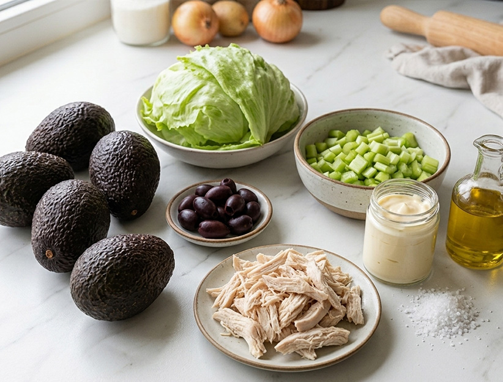

1 taza de mayonesa (se puede reemplazar ½ taza por yogurt natural para que quede más liviano)
1/2 cucharada de Condimento para Pollo Gourmet
1 cucharadita de mostaza
6 paltas pequeñas (si son grandes usar 1/2 palta por persona)
jugo de 1 limón
2 a 3 cucharadas de aceite de oliva
Sal de Mar Gourmet
6 aceitunas negras para decorar
lechuga picada

Preparación
Poner el agua en una olla grande, hervir y luego agregar el pote de caldo Concentrado de Pollo Gourmet y revolver hasta que este se disuelva. Agregar la pechuga de pollo y cocinar por 1 ½ hora o hasta que el pollo esté bien cocido.
Sacar el pollo del caldo y con las manos deshilachar. En un bowl, mezclar el pollo con el apio picado, mayonesa, Condimento para Pollo Gourmet y mostaza. Integrar bien.
Pelar las paltas, sacar el cuesco y luego agregar jugo de limón por todos lados para evitar que la palta se ponga negra. Poner las paltas sobre una cama de lechuga picada. Rociar las paltas con aceite de oliva y agregar a gusto Sal de Mar Gourmet. Rellenar las mitades de palta con una cantidad generosa de mezcla de pollo. Decorar con mitades de aceitunas.